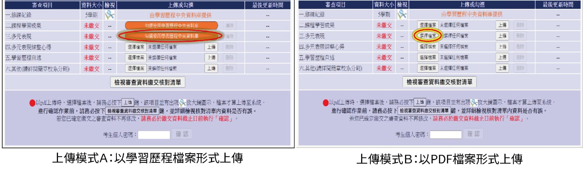
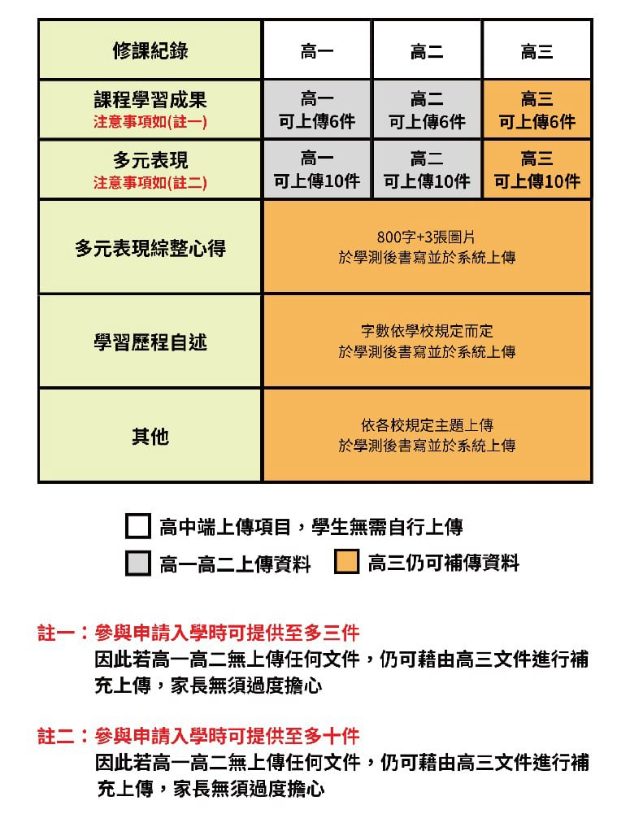

隨著111學測新制的實施，申請入學的遊戲規則已有了重大改變。除了傳統的筆試成績外，書面審查與學習歷程檔案的比重顯著提升，考生該如何在這場新制中脫穎而出？以下由甄選1493專業顧問為您深度解析。
如何正確選擇報考校系
在學測成績公告後，許多考生與家長最焦慮的便是「落點分析」。然而，正確的校系選擇不應僅建立在分數的加減，更應該回歸到對於校系本質與個人興趣的理解。
危機一：你知道你選擇的科系是讀什麼的嗎？
許多同學在選系時僅看系名，卻不了解實際課程內容。如果對科系的期待與實際教學內容產生落差，不僅在準備審查資料時難以展現熱忱，入學後也容易面臨適應問題。
危機二：落點分析系統可以相信嗎？
落點分析僅供參考，特別在新制下，各校系參採科目與加權權重可能變動。若僅迷信系統跑出的「安全區」，可能會錯失真正適合自己的校系，或是因為未考慮書審比重而導致高分落榜。
大學申請入學審查資料包含什麼？
除了落點分析和校系選擇，申請入學的另一個關鍵環節便是審查資料的準備。根據現行上傳系統顯示，申請資料主要分為六大項目：
- 修課紀錄：由學校協助上傳。
- 課程學習成果：同學自行負責。
- 多元表現：同學自行負責。
- 多元表現綜整心得：個別校系指定要求。
- 學習歷程自述：個別校系指定要求。
- 其他：補充證明文件等。

學習歷程檔案原來這麼重要！
在申請入學的審查資料中，課程學習成果和多元表現這兩項成績佔比極高。這些資料正是由同學高一至高三積累的學習歷程檔案所構成。它直接影響審查評分，是展示個人特質的關鍵舞台。

高一到高三都有上傳，還是要注意的兩件事
注意一：上傳的資料有辦法吸引教授嗎？
許多同學準備檔案時常抱持「交功課」的心態，導致品質參差不齊。建議回顧過往資料，若發現呈現不夠精緻或缺乏重點，應在綜整心得中進行補強，提高專業性。
注意二：上傳的資料跟科系有關聯性嗎？
文件必須與所選科系具備「契合度」。例如，理工組同學若想跨考商管，必須重新梳理過往經歷，突顯與領導力、邏輯思維相關的跨領域能力。契合度越高，獲得高分的機率越大。
高一到高三都沒做，怎麼辦？
如果您因故未能按時上傳學習歷程，不必過度恐慌。新制提供了pdf上傳的補強機制。雖然建議優先使用中央資料庫，但透過紮實的自傳與多元表現整理，依然能展現優勢，提升競爭力。
審查資料如何上傳：步驟與方式
審查資料的上傳是一件嚴謹的工作，以下是標準的操作流程：
- 進入系統：建議使用 Chrome 或 Edge 瀏覽器。
- 同意宣告：閱讀並同意網路審查資料上傳同意書。
- 檢視資料：查看中央資料庫中的修課紀錄與學習成果。
- 核對校系：確認報考的校系清單無誤。
- 選擇方式：選擇「從中央資料庫勾選」或「自行上傳PDF檔」。
- 逐一完成：完成所有選定校系的資料上傳。
- 最終核對：利用「檢視審查資料繳交核對清單」進行總結。
- 確認送出：輸入密碼確認，一旦送出即無法修改。
入學管道：三大關卡決定成果
申請入學的錄取結果通常由以下三部分決定：
- 學測成績表現：門檻篩選的基礎。
- 書面審查資料：個人特質與潛力的深度展示。
- 指定甄試項目：如面試、筆試或術科測驗。
常見注意事項與專家見解
因申請制度繁雜，考生常在時間管理與資料取捨上遇到困難。專家建議：平時應分散壓力進行資料修潤，不要等到最後一刻才手忙腳亂。同時，尋求專業顧問的結構化建議，能讓資料更有邏輯，大幅增加教授的印象分。